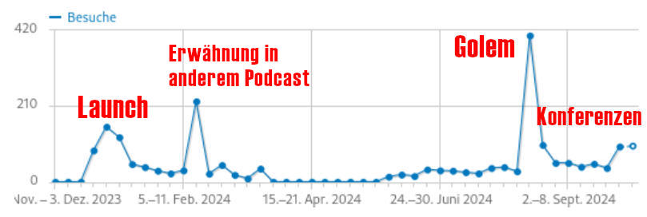

Previous slide Next slide Toggle fullscreen Open presenter view
Wie man einen (Retro-)Podcast from scratch startet
Christian Thinkowic Stankowic
Online-Museum als Blog
listet Details der Sammlung auf
56 unterschiedliche Notebooks3 PDAs, 1 Tablet10 Docking Stationen∞ Akkus und Kabel
monatlicher Podcast
thinkpad-museum.de
Teil der Sammlung
Transport der Sammlung
Weg zur Idee
Branding und Organisation
Tools und Workflow
Hosting und Marketing
Wieso eigentlich nicht?
Begeisterung für das ThemaThinkPads sind immernoch in Business- und Hacker:innen-Kreisen anzutreffen
auch popkulturell relevant
Bewegte Geschichte mit viel Trivia und Kuriositäten
Industriedesign
Absurde Hardware-Konzepte
erste Umfragen im Bekanntenkreis und auf Mastodon waren optimistisch
Respekt vor nicht kalkulierbarem Aufwand
befreundeter Podcast lud mich zu genau diesem Thema ein
ThinkPads 101
werden seit 1992 produziert
stehen für langlebige Geräte
zeitloses Design, praktikabelvielen kuriose Experimente
PDAs (IBM WorkPad)
PowerPC- und ARM-Notebooks
unübliche Erweiterungsmodule
Notebooks mit zwei Displays
u.a. wegen gutem Linux -Support beliebt
Rabbit Hole in a nutshell
Produktdesign on fleek: IBM PC Convertible Model 5140 (1986)
Stilvolle Tischlampe, popkulturelle Relevanz
Artemide Tizio (1972)
Unübliche Tastaturen und Bildschirme
ThinkPad 701C (1995)
ThinkPad W701ds (2010)
Der Zeit voraus: Tablets, die (noch) keine:r wollte
ThinkPad 360 PE (1995)
Menschen leiden unter einer sinkender Aufmerksamkeitsspanne *
Blogs werden immer seltener (aufmerksam) gelesen
Video ist zu aufwändig, gibt es außerdem bereits
ich wollte etwas Neues lernen , höre selbst gerne Podcasts
Marktanalyse hat gezeigt, dass es derartiges noch nicht gibtbewusst auf deutsch gemacht, kleinere Bubble in Kauf genommen
Erinnerst Du dich noch an die 3 letzten Folien?
Abwechslung von Anfang an wichtig, um Leute zu begeistern:
Geschichte - Historischer Kontext zu IBM und co.Menschen - Designer:innen, Ingenieur:innen, Community Modell - einzelne Geräte/SerienTechnik - z.B. VGA, Windows 3.x
Kapitelmarken und Shownotes
sollten selbstverständlich sein
Audio-visuelles MediumTon sinnvoll mit Kapitelbildern * ergänzen
z.B. Detailshots der Geräte
Abwägung: Kontext muss auch ohne Bilder gegeben sein
Transkripte
Name
ThinkPad-Museum war naheliegend, ThinkPod bereits vergeben
TPM * als Episoden-Prefix
Cover mit TrackPoint für direkte Assoziation
Audioschema
Stundenlang die üblichen Kataloge (u.a. AudioJungle ) durchsucht
wollte ein elektronisches Schema mit ikonischen ThinkPads-Sounds
Musiker im Bekanntenkreis kreierte exakt das
Nein, das steht nicht für T rusted P latform M odule!
simples Design
Übernahme ähnlicher Farben
weiß (#fdfdfd)
rot (#fe1610, #ec1c23)
grün: (#01a755)
blau: (#496da9)
wiedererkennbare Schriftarten
-43° Drehung des Logos
Markdown -Dokumente in Git -Repositories*
Repos für Episoden, Artwork, Webseite
Lesseons Learned: Git LFS für große Bilder
Kanban-Board und Issues für Episoden-Planung
Tags für verschiedene Themen
Pro Episode zwei Markdown-Dokumente
Inhaltliche Stichpunkte und Kapitel (episode.md)
Recherche-Notizen und Quellensammlungen (dossier.md)
Ein Desktop-Wiki oder Cloud-Dienst tut es auch
Focusrite Scarlett Solo Gen 3 + beyerdynamic DT 797 PV
hier tut es auch was Günstigeres (z.B. RØDE NT-USB Mini)
ich finde Sprechgarnituren einfacher zu nutzen als Standmikrofone
REAPER und UltraSchall *Studio-Link für Gäst:innenTerminplanung mit nuudel
GIMP für Bilder und Artworkwhisper.cpp für TranskripteStatische Webseite mit Hugo
Stabile Linux-Version wann?
Themenauswahl (aus Backlog)
Recherche (Internet, Bücher)Aufzeichnung
Schnitt und Post-Production
Kapitelmarken und -bilder
Export
Transkript erstellen lassen
= ~10h pro Episode
CPU goes brrr
Schnitt und Postproduction
Sprechpausen und Versprecher schneiden
Nebengeräusche entfernen
Sprachtracks -23 LUFS normalisieren
Pro Sprachtrack aktivieren
VST: ReaEQ (Cockos)
JS: Ultraschall Dynamics
JS: LUFS Loudness Metering auf Mastertrack aktivieren
Export mit Meta -Informationen
Titel, Autor, Podcast, Jahr, Kategorie und Beschreibung
Es gibt zahlreiche Services für automatisierte Transkripte
Kosten pro Minute/Episode (oder persönlichen Daten)
Ein Museum zu betreiben ist schon kostenintensiv genug
außerdem Freund des Self-Hostings
Webserver und lokale Rechenpower sind schon vorhanden
OpenAI Whisper ist ein kostenfreies Modell für Spracherkennung
kann auf eigener Hardware benutzt werden
erfordert jedoch eine NVIDIA -Grafikkarte
mit whisper.cpp gibt es einen Fork mit CPU -Support
benötigt auf meiner Hardware die ~1,5-fache Episodenlänge
Es gibt zahlreiche Hosting-Angebote mit fairen Preisen
Im Prinzip tut es aber schon ein einfacher Webserver
Feeds können auch mit Tools wie Hugo erstellt werden
Es gibt auch Plugins für gängige CMS wie WordPress
Im Fediverse bin ich auf Castopod gestoßen
Open Source-Plattform für Podcast-HostingEinfach zu benutzende WebUI
unterstützt ActivityPub
kann direkt aus Mastodon und co. abonniert werden
Community-Interaktion
zahlreiche Zusatzfunktionen
Themes
SEO, Monetarisierung
in PHP entwickelt
benötigt eine MySQL- oder MariaDB-Datenbank
vorgefertigtes Paket für YunoHost
kann via Docker oder Podman gehostet werden
Ein Account auf podcasts.social ist Pflicht!
Posts für Episoden , aber auch direkte Community-Interaktion
Aktuelle Episode ans Profil pinnen
Bubble aufbauen: Hashtags verfolgen, an Konversationen mitteilen
Feed in Datenbanken, wie fyyd eintragen
oft gibt es auch Special Interest-Projekte, wie z.B. wisspod
An anderen Communities beteiligen (z.B. thinkpad-forum.de )
Konferenzen wie diese besuchen (duh!)
Menschen lieben Sticker
Kollaborationen mit befreundeten Podcasts
Selbstgehostetes Matomo für die Webseite (Klicks/Quellen)
Mastometrics für Mastodon-Interaktionen OP3 (O pen P odcast P refix P roject) für Episoden -Downloads
Client-Informationen über Weiterleitungen, erfordert Feed-Anpassung

Podcasts produzieren macht Spaß
es gibt für alles eine Nischen-Bubble
die Podcast-Szene freut sich aber über kuriose Themen
probiert es einfach aus - Vielfalt ist gut!
"Be the change you want to see in the (podcast) world "
- Blog seit 2008 (=16)
- war late to the party: habe Podcasts erst in der Pandemie für mich entdeckt
- mit LNP und Chaoaradio angefangen und dann weitere Podcasts entdeckt
- Auf den PPC-Notebooks lief UNIX (IBM AIX)
- Kuriose Module: ausklappbares Numpad, PDA-Docking Station und TV-Tuner
- Notebook sieht seitlich betrachtet wie ein Krokodil aus
- Anspielung auf den Produktionsstandort Boca Raton (Florida), wo eine Alligator-Plage herrschte
- im Hintergrund: Richard Sapper
- einer der bedeutendsten Produktdesigner der 2.Hälfe des 20.Jahrhunderts
- gewann zahlreiche Preise für seine Designs
- Lampe kam ohne sichtbare Kabel aus
- konnte ohne Federn einfach justiert werden
- Gegengewichte erhöhen Stabilität und ergänzen das Design
- TPs treten schon lange auch außerhalb von "Nerdfilmen" auf
- 701c steht u.a. im Museum of Modern Art in New York
- Transkripte nicht nur für Gehörlose interessant, auch Menschen mit Konzentrationsschwierigkeiten profitieren davon
- Repository kann mit Gäst:innen geteilt werden
- nicht ablesen, aber Stichpunkte und Moderationsanweisungen helfen
- großer Unterschied alleine einen Podcast aufzunehmen vs. mit mehreren Menschen
- Scarlett Solo ca. 99 EUR
- DT 797 PV ca. 450 EUR
- UltraSchall perfekt für Leute die wenig Ahnung von Audio haben
- UltraSchall auf MacBook Pro statt ThinkPad ü•≤
- ermöglicht mehrere User und Podcast-Feeds
- Postet was mit dem #thinkpad-Hashtag und ich antworte euch sehr wahrscheinlich
- Podcasting soll Spaß machen, Analytics bitte nicht zu ernst nehmen
- OP3
- Open Source-Service für datenschutz-konforme Podcast-Metriken
- freie API, Quellcode kann auf GitHub eingesehen werden